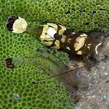
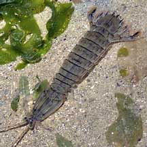
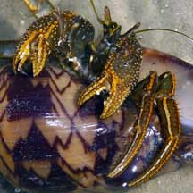
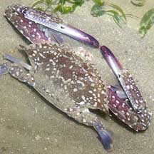
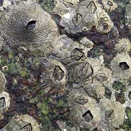

|
|
|
Arthropods
Phylum Arthropoda
updated
Mar 2020
What
are arthropods? Arthropods are among the most familar
animals to us. 75% of all known animal species belong to Phylum
Arthropoda.They include land-dwelling animals like insects,
spiders and scorpions. Arthropods that are found in the sea
include crabs, shrimps, hermit crabs, horseshoe crabs, mantis
shrimps and barnacles.
Arthropod
features: Arthropods have a harded outer skeleton
(exoskeleton) called the cuticle. 'Arthropoda' means 'jointed
foot' in Greek. Indeed, arthropods have jointed legs. Arthropods
make up most of all known animals, so this body plan seems to
work well.
Human
uses: Arthropods are well used by people everywhere.
They are among our favourite food! Remember that crabs and shrimps
are also arthropods. Insects have influenced humans since the
beginning of time. Their useful functions include pollinating
our food crops. On the flip side, they also spread disease and
destroy our food crops. |
Phylum
Arthropoda: some subgroups
Subphylum
Chelicerata
Class Merostomata (horseshoe crabs)
Class Arachnida (spiders, scorpions)
Subphylum
Mandibulata
Class Myriapoda (centipedes, millipedes)
Class Insecta (insects)
Class
Crustacea
Subclass Malacostraca
Order
Decapoda
Infraorder Penaeidae (shrimps)
Infraorder Caridae (shrimps)
Infraorder Astecidae (lobsters)
Infraorder Anomura (hermit
crabs, porcelain
crabs)
Infraorder Brachyura (true
crabs)
Order
Stomatopoda (mantis
shrimps)
Order
Isopoda (sea
slaters)
Subclass Cirripedia (barnacles)
Subclass
Copepoda (copepods)
from Pechenik, Jan A., 2005. Biology of the Invertebrates.
5th Edition |
|
|
|

A
pair of anemone shrimps is commonly
found in our carpet anemones.
Kusu Island, Jul 04 |

Mantis
shrimps are not like other shrimps
and belong to a different Order Stomatopoda.
Changi, Jul 05 |

Striped hermit crab
Chek Jawa, Feb 05 |

The Flower crab and
other decapods
are among our favourite seafood!
Changi, Jun 05
|
|
|
|
|
|

Barnacles are crustaceans and arthropods!
Tuas, May 05 |
|
|